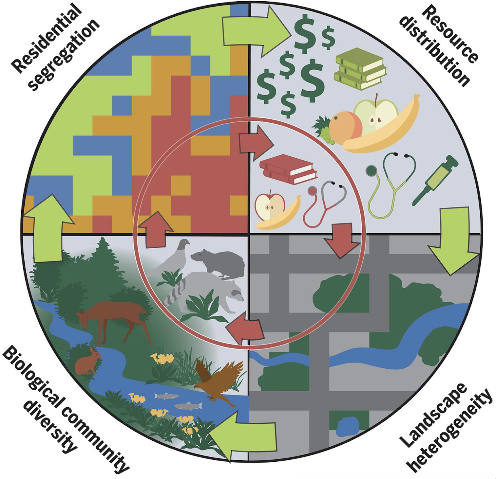

Modules
This course is divided into separate modules, each designed to give you a hands-on experience working in teams to reproduce or examine a fundamental result in global change ecology. Each module will also introduce a different type of data and different tooling to handle it, as described in the summaries below. You will spend a few weeks working through each module in your team, largely at your own pace. Weekly readings and introductory live-code sessions will provide some necessary background, but real learning will happen only by doing. Most of the questions in your assignment for each module do not have 'right' answers, but involve open ended research to fully explore. Students without prior statistical or computational experience should be able to complete initial exercises, while teams with greater prior experience are expected to push those boundaries by going deeper into the analysis and presentation. Workflow and communication are central elements to each module. All work should appear in professional and well documented format using RMarkdown notebooks in the project GitHub repository and pass all automated checks on Travis-CI.Climate Change

Tabular data
What is the evidence for a changing climate? In this unit, we will examine some of the most important indicators of global climate change: including CO2 concentration, global mean temperature, sea level rise, land ice sheet melt, and arctic sea ice cover. We will wrangle a wide range of tabular data file formats used by NOAA and other agencies and introduce the fundamentals of data visualization withggplot2
and data processing with basic functions from the readr, tidyr, and
dplyr packages as we
seek to replicate the principle results of climate change over the last decades and also the
past thousands of years.
Overfishing
 From Worm
From Worm Relational databases
The last fish in the sea? In a paper inEcological Simulation

memory Simulated data
One of the fastest growing sources of data comes not from measurements, but simulations.Geospatial Analysis

From Schell et al. 2020, https://doi.org/10.1126/science.aay4497
satellite Geospatial data
Residential segregation and systemic racism have substantial impacts on landscape heterogeneity and ecological processes in US cities. In August 2020, Christopher Schell and collegues published a review insf package and emerging
ecosystem of r-spatial tools.
Mass Extinctions
 From Cerbellos et al., https://doi.org/10.1126/sciadv.1400253
From Cerbellos et al., https://doi.org/10.1126/sciadv.1400253